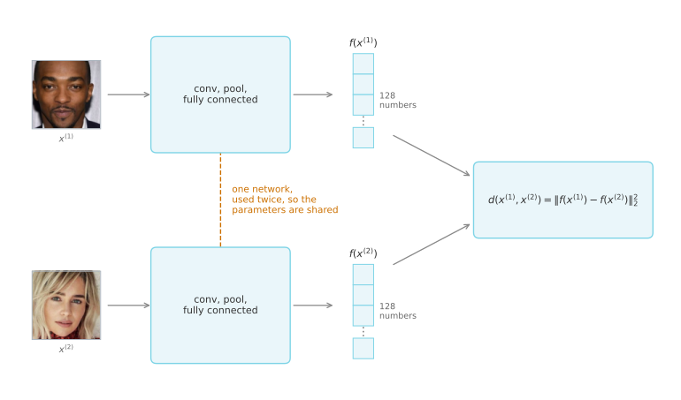
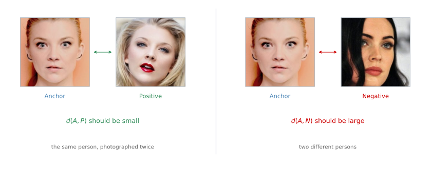
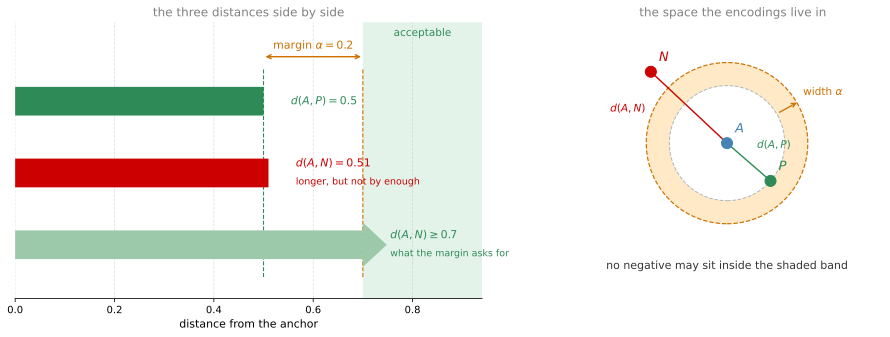
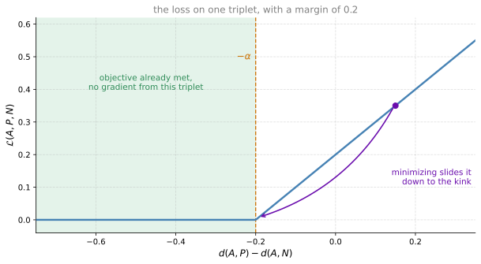
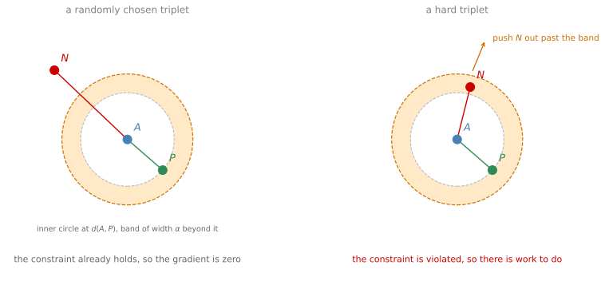
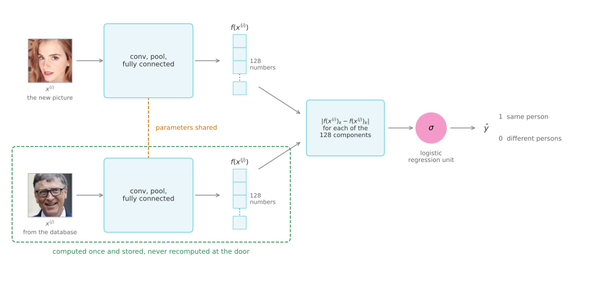
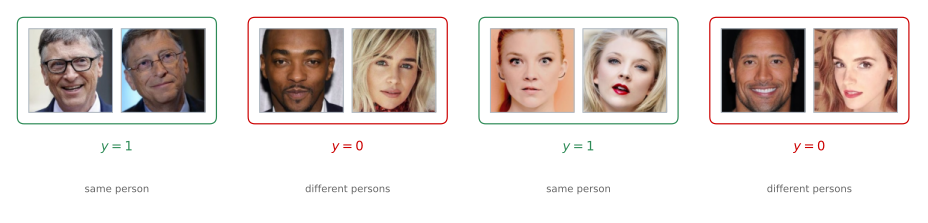

Siamese Networks and the Triplet Loss
deep-learning
convolutional-neural-networks
computer-vision
face-recognition
siamese-network
triplet-loss
embeddings
Turning a picture into a 128 number encoding, the triplet loss and the margin that trains one, and face verification posed as binary classification.
Face Recognition and One Shot Learning reduced the whole problem to a single function. Given a \(d\) that takes two faces and reports how different they are, verification is a threshold, recognition is a sweep over the database, and one shot learning stops being a difficulty at all.
Nothing has been said yet about how \(d\) is built. That takes two pieces, an architecture that turns a picture into something comparable, and an objective that trains it.
Siamese Networks
You are used to seeing pictures of ConvNets like this one. An image goes in, call it \(x^{(1)}\), and through a sequence of convolutional, pooling, and fully connected layers it comes out as a feature vector. Sometimes that vector is fed to a softmax unit to make a classification. That is not what happens here.
Focus instead on the vector of, say, 128 numbers computed by some fully connected layer deeper in the network. Give that list of 128 numbers a name, \(f(x^{(1)})\), and think of it as an encoding of the input image. The network has taken the input picture and re-represented it as a vector of 128 numbers.
To compare two pictures, feed the second one to the same neural network with the same parameters, and get a different vector of 128 numbers, which encodes the second picture. Call it \(f(x^{(2)})\). The superscripts here are just labels for two input images. They do not have to be the first and second examples in the training set, and can be any two pictures at all.
If you believe those encodings are a good representation of the two images, define the distance between \(x^{(1)}\) and \(x^{(2)}\) as the norm of the difference between the encodings.
\[ d\big(x^{(1)}, x^{(2)}\big) = \big\| f(x^{(1)}) - f(x^{(2)}) \big\|_2^2 \]
Running two identical convolutional neural networks on two different inputs and then comparing the results is called a Siamese neural network architecture. Many of the ideas here come from the research system called DeepFace, described in Taigman et al. (2014).
What Training Has To Achieve
The two networks in that picture have the same parameters, because they are one network applied twice. So the parameters of the neural network define the encoding \(f(x^{(i)})\). Given any input image \(x^{(i)}\), the network outputs a 128 dimensional encoding of it.
What you want to learn are parameters with two properties.
If two pictures \(x^{(i)}\) and \(x^{(j)}\) are of the same person, the distance between their encodings should be small.
\[ \big\| f(x^{(i)}) - f(x^{(j)}) \big\|^2 \quad \text{is small} \]
If \(x^{(i)}\) and \(x^{(j)}\) are of different persons, the distance between their encodings should be large.
\[ \big\| f(x^{(i)}) - f(x^{(j)}) \big\|^2 \quad \text{is large} \]
As you vary the parameters in all of these layers you end up with different encodings, and backpropagation can vary all of those parameters so that these conditions come to be satisfied. What is missing is an objective function that expresses the two conditions in a form gradient descent can minimize.
Review Questions
1. Why is it essential that the two networks in a Siamese architecture share their parameters, rather than being two separately trained ConvNets?
TipAnswer
Because the distance is only meaningful if both pictures are measured on the same scale. Sharing parameters means there is one function \(f\), and two pictures of the same person land near each other in the same 128 dimensional space. Two independent networks would produce encodings in two unrelated coordinate systems, and subtracting one from the other would compute nothing in particular. It also halves the number of parameters to learn.
1. The final softmax layer of the usual ConvNet is thrown away here. What is used instead, and why is that a better output for this task?
TipAnswer
The vector of 128 numbers from a fully connected layer deeper in the network, used as an encoding of the picture. A softmax output is a probability over a fixed set of classes, so it is tied to a fixed set of people, which is exactly the property that broke the naive approach. An encoding is a description of the face itself, with no list of people baked into it, so it can be compared against anything.
Triplet Loss
One way to learn the parameters so that the network gives a good encoding is to define and apply gradient descent on the triplet loss function.
To apply it, you have to compare pairs of images, and to learn the parameters you have to look at several pictures at the same time. Given one pair of images of the same person, you want their encodings to be similar. Given a pair of images of different persons, you want their encodings to be quite different.
In the terminology of the triplet loss, you always look at one anchor image, and then compare it against a positive example, meaning a picture of the same person, and against a negative example, meaning a picture of a different person. Three images at a time, which is what gives the loss its name. They are abbreviated A, P, and N.

The anchor is the same picture in both halves. What changes is what it is being compared against, and the whole objective is that the left comparison comes out smaller than the right one.
What you want from the encoding is the following property.
\[ \big\| f(A) - f(P) \big\|^2 \le \big\| f(A) - f(N) \big\|^2 \]
The left side is \(d(A, P)\) and the right side is \(d(A, N)\), since \(d\) can be thought of as a distance function, which is what it was named for. Moving the term on the right across to the left gives an equivalent form.
\[ \big\| f(A) - f(P) \big\|^2 - \big\| f(A) - f(N) \big\|^2 \le 0 \]
Margin
There is a slight change to make to that expression, because one trivial way to satisfy it is to learn that everything equals zero. If \(f\) always outputs the zero vector, then the first term is \(0 - 0\), the second term is \(0 - 0\), and the inequality holds without the network having learned anything at all. There is a second trivial output with the same problem, which is an encoding identical for every image, since that also gives zero minus zero.
To stop the neural network from doing either of those, the objective is modified so that the left side does not merely have to be less than or equal to zero. It has to be quite a bit smaller than zero. In particular it should be less than \(-\alpha\), where \(\alpha\) is another hyperparameter. By convention it is written as a \(+\alpha\) on the left instead of a \(-\alpha\) on the right.
\[ \big\| f(A) - f(P) \big\|^2 - \big\| f(A) - f(N) \big\|^2 + \alpha \le 0 \]
The same \(\alpha\) can be added to the earlier form of the inequality, where it reads more directly.
\[ d(A, P) + \alpha \le d(A, N) \]
\(\alpha\) is called a margin, which is terminology you would be familiar with from the literature on support vector machines, and which does not matter if you have not seen it.
Say the margin is set to \(0.2\), and in some example \(d(A, P) = 0.5\). Then you are not satisfied if \(d(A, N)\) is only a little bigger, say \(0.51\). Even though \(0.51\) is bigger than \(0.5\), that is not good enough. You want \(d(A, N)\) to be much bigger than \(d(A, P)\), in this case at least \(0.7\).
To achieve that gap of \(0.2\), the network can either push \(d(A, N)\) up or push \(d(A, P)\) down. Either way the margin parameter forces the anchor-positive pair and the anchor-negative pair further away from each other.

Loss Function
Now turn that inequality into something to minimize. The triplet loss is defined on triples of images. Given three images \(A\), \(P\), and \(N\), where the positive is of the same person as the anchor and the negative is of a different person, the loss is the left side of the inequality, floored at zero.
\[ \mathcal{L}(A, P, N) = \max\Big( \big\| f(A) - f(P) \big\|^2 - \big\| f(A) - f(N) \big\|^2 + \alpha, \; 0 \Big) \]
The effect of taking the max with zero is this. So long as the first argument is less than or equal to zero, the loss is zero, because the larger of something negative and zero is zero. In other words, as soon as the objective is achieved on this triplet, the triplet costs nothing.
If on the other hand the first argument is greater than zero, the max selects it, and the loss is positive. Minimizing the loss then has the effect of driving that quantity back down towards zero. And once it is at zero or below, the neural network does not care how much further negative it goes, which is what stops the network from wasting capacity making easy triplets even easier.

That is the loss on a single triplet. The overall cost function for the neural network is the sum over the training set of these individual losses on different triplets.
\[ J = \sum_{i=1}^{m} \mathcal{L}\big(A^{(i)}, P^{(i)}, N^{(i)}\big) \]
Training Set
Say you have a training set of 10,000 pictures with 1,000 different persons. What you do is take those 10,000 pictures, use them to select triplets, and then train the learning algorithm using gradient descent on this cost function, which is defined on triplets of images drawn from the training set.
Notice that in order to define that dataset of triplets at all, you need pairs of \(A\) and \(P\), meaning pairs of pictures of the same person. So for the purpose of training the system, you need a dataset where you have multiple pictures of the same person. That is why the example is 10,000 pictures of 1,000 different persons, which is ten pictures on average of each person. If you had just one picture of each person, you could not train this system.
After having trained the system, though, you can apply it to the one shot learning problem, where the face recognition database might hold only a single picture of the person you are trying to recognize. The requirement for multiple images per person applies to the training set, and not to the database the finished system is pointed at.
Choosing Hard Triplets
How do you actually choose the triplets to form the training set? Suppose you choose \(A\), \(P\), and \(N\) randomly, subject only to \(A\) and \(P\) being the same person and \(A\) and \(N\) being different persons. The problem is that the constraint is then very easy to satisfy. Given two randomly chosen pictures of different people, chances are \(d(A, N)\) is already much bigger than \(d(A, P)\), by more than the margin, and the neural network will not learn much from that triplet.
What you want instead is to choose triplets that are hard to train on. A hard triplet is one where you choose \(A\), \(P\), and \(N\) so that \(d(A, P)\) is actually quite close to \(d(A, N)\). In that case the learning algorithm has to try extra hard, taking the quantity on the right and pushing it up, or taking the quantity on the left and pushing it down, so that there is at least a margin of \(\alpha\) between the two sides.

The effect of choosing these triplets is that it increases the computational efficiency of the learning algorithm. If you choose the triplets randomly, then too many of them are really easy, and gradient descent does not do anything, because the neural network already gets them right pretty much all the time. It is only by choosing hard triplets that the gradient descent procedure has to do some work to push these quantities away from those quantities.
The details of speeding up an algorithm by choosing the most useful triplets to train on are presented in Schroff et al. (2015), which describes a system called FaceNet, and which is where a lot of the ideas in this section come from.
NoteHow These Systems Get Named
There is a fun fact about how algorithms are often named in the deep learning world. If you work in a certain domain, call it blank, you often end up with a system called blank net, or deep blank. The two papers behind this page are FaceNet and DeepFace, which is the pattern twice over.
Scale
Today’s face recognition systems, especially the large-scale commercial ones, are trained on very large datasets. Datasets north of a million images are not uncommon, some companies are using north of 10 million images, and some have north of 100 million images with which they train these systems. These are very large datasets even by modern standards, and they are not easy to acquire.
Fortunately, some of these companies have trained these large networks and posted the parameters online. Rather than trying to train one of these networks from scratch, this is one domain where, because of the sheer size of the data volumes involved, it is useful to download someone else’s pretrained model. Even then it is still worth knowing how these algorithms were trained, in case you need to apply the ideas from scratch yourself for some other application.
Review Questions
1. Why does the triplet loss need a margin \(\alpha\) at all, rather than simply asking for \(d(A, P) \le d(A, N)\)?
TipAnswer
Because the inequality without a margin has trivial solutions. If the network outputs the zero vector for every image, both distances are zero and the inequality holds. The same is true if it outputs one identical encoding for every image. Both satisfy the objective perfectly while telling you nothing about faces. Requiring the left side to be below \(-\alpha\) rather than below zero rules those out, because a constant encoding gives exactly zero, which is not below \(-\alpha\) for any positive \(\alpha\).
1. A triplet has \(d(A, P) = 0.4\) and \(d(A, N) = 0.9\), with \(\alpha = 0.2\). What is its loss, and what does gradient descent do with it?
TipAnswer
Zero. The first argument of the max is \(0.4 - 0.9 + 0.2 = -0.3\), which is negative, so the max selects zero. Gradient descent does nothing with this triplet, because a loss of exactly zero contributes no gradient. The network is already comfortably right about it, and the margin says that is good enough. Pushing \(d(A, N)\) out to \(1.5\) would not lower the cost any further.
1. You have a dataset of 5,000 photographs of 5,000 different people, one each. Can you train a face recognition system on it with the triplet loss?
TipAnswer
No. Every triplet needs an anchor and a positive, which are two different pictures of the same person, and this dataset has no such pair anywhere in it. Anchors and negatives are easy, since any two people will do, but without anchor-positive pairs there are no triplets to form. Note that this is a constraint on the training set only. Once trained on a suitable dataset, the network is perfectly happy running against a database that holds one picture per person.
1. Why does training on randomly chosen triplets waste computation?
TipAnswer
Because two randomly chosen pictures of different people are usually so unalike that \(d(A, N)\) already exceeds \(d(A, P)\) by more than the margin. Those triplets sit in the flat part of the loss where it is exactly zero, so they contribute no gradient, and the forward and backward passes spent on them buy nothing. Choosing hard triplets, where \(d(A, P)\) is close to \(d(A, N)\), puts the examples in the sloped part of the loss where gradient descent actually has to work.
1. Which of the following is a correct definition of the triplet loss on one triplet, with \(\alpha > 0\)? Work it out from first principles rather than recalling the formula.
\(\displaystyle \max\big(\|f(A) - f(P)\|^2 - \|f(A) - f(N)\|^2 + \alpha, \; 0\big)\)
\(\displaystyle \max\big(\|f(A) - f(N)\|^2 - \|f(A) - f(P)\|^2 - \alpha, \; 0\big)\)
\(\displaystyle \max\big(\|f(A) - f(N)\|^2 - \|f(A) - f(P)\|^2 + \alpha, \; 0\big)\)
\(\displaystyle \max\big(\|f(A) - f(P)\|^2 - \|f(A) - f(N)\|^2 - \alpha, \; 0\big)\)
TipAnswer
a. Two things fix the expression, and each one rules out two of the options.
The first is which distance is subtracted from which. The quantity you want driven down is \(d(A, P)\) and the quantity you want driven up is \(d(A, N)\), so the expression inside the max has to be \(d(A, P) - d(A, N)\), which is negative exactly when the network has the triplet right. b and c have it the other way round, and minimizing either of them would reward encodings that put the anchor close to a stranger and far from a second picture of the same person.
The second is the sign on \(\alpha\). Adding it makes the requirement stricter, since the loss only reaches zero once \(d(A, N)\) beats \(d(A, P)\) by at least \(\alpha\), which is what a margin means. Subtracting it, as in d, would let \(d(A, P)\) exceed \(d(A, N)\) by up to \(\alpha\) and still cost nothing, which is a license to get the triplet wrong rather than a margin.
The outer \(\max\) with 0 is the same in every option, and it is what stops the cost from being driven down forever by pushing negatives away once a triplet is comfortably right.
1. You want a system that takes a face picture and decides whether that person belongs to a workgroup. You have a picture of everyone currently in the group, but members will leave and new ones will join. To train \(d\) with the triplet loss you gather many persons and take several pictures of each one. Which of the following do you agree with? (Select the best answer.)
You should not use persons from outside the workgroup, because that might create high variance in your model.
You take several pictures of the same person in order to train \(d(\text{img}_1, \text{img}_2)\) with the triplet loss.
It would be better to raise the number of persons in the dataset by taking only one picture of each, so as to have a more representative sample of the population.
You take several pictures of the same person because it is a cheap way to collect more pictures, since you already have that person in front of you.
TipAnswer
b. Every triplet needs an anchor and a positive, and those are two different pictures of the same person. Several pictures each is not a convenience, it is the thing the objective cannot be formed without, which is why d gives the right action for the wrong reason and why c is the one option that makes the dataset unusable. A thousand persons with one picture each yields no anchor-positive pair anywhere in it, and therefore no triplets at all.
a has the situation backwards. The network never learns who anyone is; it learns what “same person” looks like, and it learns that from persons it will never be asked about again. Training on many outsiders is precisely what makes the encoding generalize to workgroup members it has never seen, which is also why people can join and leave without anything being retrained.
Face Verification as Binary Classification
The triplet loss is one good way to learn the parameters of a ConvNet for face recognition. There is another, which poses face recognition as a straight binary classification problem.
Take the pair of neural networks, meaning the same Siamese network as before, and have both of them compute their embeddings, maybe 128 dimensional, maybe even higher dimensional. Then have those be the input to a logistic regression unit, which makes a prediction. The target output is 1 if both pictures are of the same person, and 0 if they are of different persons. That is a way to treat face recognition as a binary classification problem, and it is an alternative to the triplet loss for training a system like this.
What does that final logistic regression unit actually do? The output \(\hat{y}\) is a sigmoid function applied to some set of features. Rather than feeding in the encodings themselves, what you can do is take the differences between the encodings.
\[ \hat{y} = \sigma\left( \sum_{k=1}^{128} w_k \left| f(x^{(i)})_k - f(x^{(j)})_k \right| + b \right) \]
In this notation \(f(x^{(i)})\) is the encoding of the image \(x^{(i)}\), and the subscript \(k\) means to select out the \(k\)-th component of that vector. So the expression inside the sum is the element-wise difference in absolute values between the two encodings.
Think of those 128 numbers as features that you then feed into logistic regression, which has its own parameters \(w_k\) and \(b\) just like a normal logistic regression unit. You train appropriate weights on those 128 features in order to predict whether or not the two images are of the same person or of different persons.
There are a few other variations on how you can compute that quantity inside the sum. Another one is the following.
\[ \frac{\big(f(x^{(i)})_k - f(x^{(j)})_k\big)^2}{f(x^{(i)})_k + f(x^{(j)})_k} \]
This is sometimes called the chi square similarity, written with the Greek letter chi as \(\chi\). The name is inherited rather than literal. The expression has the shape of Pearson’s chi squared statistic, which sums squared differences each divided by a normalizing term, and that statistic is itself named for the chi-squared distribution it follows. No hypothesis test is being run here. The formula is only a way of measuring how far apart two components are before the result is handed to the logistic unit. This and other variations are explored in the DeepFace paper referenced earlier.
In this learning formulation the input is a pair of images, so the pair is really the training input \(x\), and the output \(y\) is either 0 or 1 depending on whether you are inputting a pair of similar or dissimilar images. And, same as before, what you are training is a Siamese network, which means the upper network has parameters that are tied to the parameters in the lower network.

Precomputing Encodings
One computational trick can help deployment significantly. Of the two images being compared, one is the new picture, taken of the employee walking in and hoping the doorway will open for them, and the other comes from the database.
Instead of having to compute that database embedding every single time, precompute it. When the employee walks in, use the upper component of the network to compute the encoding of the new image, compare it with the precomputed encoding, and use that to make the prediction \(\hat{y}\).
This helps twice over. You no longer need to store the raw images, only their encodings. And with a very large database of employees, you no longer need to compute the encodings for every entry on every request. The idea of precomputing some of these encodings can save a significant amount of computation.
This type of precomputation works both for the Siamese architecture where face recognition is treated as a binary classification problem, and for the encodings learned with the triplet loss described earlier.
To wrap up, to treat face verification as supervised learning, you create a training set not of triplets now but of pairs of images, where the target label is 1 when the two pictures are of the same person and 0 when they are of different persons. You use those pairs to train the Siamese network with backpropagation. This version of treating face verification, and by extension face recognition, as a binary classification problem works quite well.

Every pair is one training example. The network sees the two pictures, produces its two encodings, and the logistic unit on top is scored against that 1 or 0.
Review Questions
1. The logistic regression unit is fed the 128 element-wise absolute differences rather than the two encodings themselves. What would be lost by feeding it the 256 raw numbers instead?
TipAnswer
The symmetry and the comparison. Feeding in \(|f(x^{(i)})_k - f(x^{(j)})_k|\) makes each feature a direct statement about how far apart the two pictures are on component \(k\), which is what the question actually asks, and it gives the same answer whichever picture is presented first. Handing over 256 raw numbers would leave the unit to discover subtraction on its own from a single linear layer, which it cannot do in a way that generalizes, and the answer would depend on which picture arrived first.
1. What changes between the triplet loss formulation and the binary classification formulation, and what stays the same?
TipAnswer
The architecture underneath stays the same. Both use a Siamese network with tied parameters that turns a picture into an encoding, and both learn those encodings by backpropagation. What changes is what sits on top and what the training examples look like. Triplet loss takes examples in threes, anchor, positive, and negative, and its objective is a margin on distances. Binary classification takes examples in pairs with a label of 0 or 1, and its objective is the usual logistic loss on a sigmoid output.
1. Why can the database side of the network be precomputed while the other side cannot?
TipAnswer
Because the database picture is known well in advance and never changes, so its encoding can be computed once, when the person is enrolled, and stored. The other picture is taken at the moment somebody walks up to the door, so nothing about it exists until then and its encoding has to be computed live. The saving is real, since the live cost becomes one forward pass rather than one per database entry, and the raw enrollment photographs need not be kept at all.
References
- Schroff, F., Kalenichenko, D., & Philbin, J. (2015). FaceNet: A unified embedding for face recognition and clustering. In 2015 IEEE Conference on Computer Vision and Pattern Recognition (CVPR) (pp. 815-823). IEEE. https://doi.org/10.1109/CVPR.2015.7298682
- Taigman, Y., Yang, M., Ranzato, M., & Wolf, L. (2014). DeepFace: Closing the gap to human-level performance in face verification. In 2014 IEEE Conference on Computer Vision and Pattern Recognition (pp. 1701-1708). IEEE. https://doi.org/10.1109/CVPR.2014.220
- Toy, B. (2019). Pins face recognition [Data set]. Kaggle. https://www.kaggle.com/datasets/hereisburak/pins-face-recognition